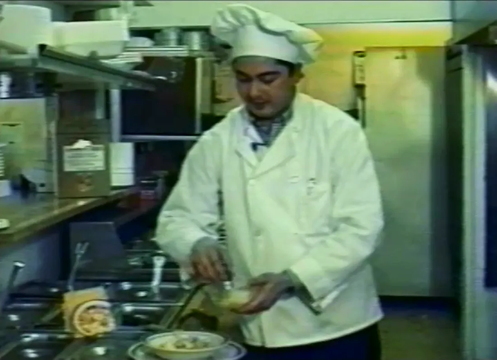

Nuestra historia
Una receta familiar que sigue viva.
Chololoy® es un negocio familiar dedicado a los auténticos sabores mexicanos de la familia y a mantener viva la tradición de Víctor.
Víctor Hitchcock Medina
La pasión de Víctor por los auténticos sabores mexicanos nació en su ciudad natal, León, Guanajuato. Se propuso encontrar la manera de compartir las recetas de su familia y encontró el recetario de su bisabuela Nemesia García, originaria del estado de Tlaxcala. Ahí estaba la sopa de tortilla que tanto le gustaba de niño, el primer sabor que quiso compartir con los demás.

Víctor en la cocina, preparando la sopa.
Imágenes antiguas de Víctor Hitchcock Medina, con filipina blanca, preparando sopa de tortilla como la familia la sigue haciendo.

De la cocina familiar a las cocinas de restaurantes
Víctor se estableció en Seattle, Washington, a finales de los años 80 y se propuso preparar esa misma sopa de tortilla en versión deshidratada, para que los restaurantes mexicanos pudieran usarla con facilidad. Su calidad y su sabor auténtico conquistaron a la cadena de restaurantes mexicanos más grande del Noroeste del Pacífico y de Florida.
Muchos han intentado copiarla. Nadie la ha igualado. Esta es la sopa de tortilla original que la familia ha preparado por generaciones, hecha con ingredientes 100% naturales y sin conservadores.
La Sopa de Tortilla Chololoy® de Víctor se ha servido en cientos de restaurantes de estos estados:
- Arizona
- California
- Florida
- Georgia
- Idaho
- Illinois
- Iowa
- Montana
- Nevada
- Carolina del Norte
- Oregón
- Utah
- Washington
- Wyoming
Cuatro generaciones, una receta.
- Tlaxcala
Mamá Mecho (Nemesia García) guarda un recetario familiar en Tlaxcala, México. En él: una sopa de tortilla.
- Finales de los 80
Víctor Hitchcock Medina, de León, Guanajuato, se establece en Seattle y convierte la receta en un sazonador deshidratado para restaurantes.
- 1990
Se funda Chololoy Food Company en Seattle. Víctor conquista como cliente a la cadena de restaurantes mexicanos más grande del Noroeste del Pacífico.
- 1990s
Chololoy® llega a cientos de restaurantes en EE. UU. casi solo por recomendación.
- 2013 · 2017
Los hermanos de Víctor, Patrick Hitchcock Medina y Kristina Knutson, toman el negocio y lo relanzan en EE. UU. como Chololoy, Inc.
- Hoy
De base para sopa de tortilla a sazonador de todos los días, hoy en cocinas de restaurantes de todo EE. UU.

Continúan Patrick y Kristina.
Desde el fallecimiento de Víctor, sus hermanos, Patrick y Kristina, han estado al frente de Chololoy®, y mantienen vivas las recetas, la relación con los chefs y la cocina familiar. Cada pedido sigue pasando por sus manos.
Más que sopa
Durante años, Chololoy® se usó sobre todo para preparar sopa de tortilla en restaurantes mexicanos. Luego la familia empezó a usarlo en casa, y los amigos también. No solo en sopa, sino como sazonador para pastas, mariscos y platillos modernos, en el desayuno, la comida y la cena. El producto no cambia. Lo que sigue creciendo es la manera de usarlo.
Pruébalo en tu cocina.
Muestras, pedidos o una mezcla especial: Kristina responde cada mensaje personalmente. Atendemos en español.
kristina@chololoy.net(503) 703-7720